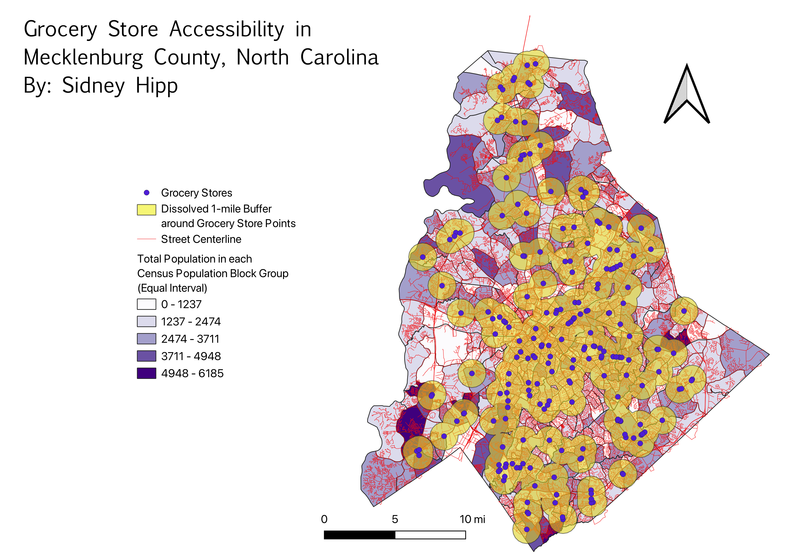

Homework 8: Geoprocessing Analysis
Food Deserts
How accessible are grocery stores in Mecklenburg County, NC?

I recently saw a statistic that 15% of people living in Mecklenburg County, NC live in a food desert. A food desert is when someone lives further than a 1 mile walk or a 10 minute drive to the nearest grocery store. While I am not yet advanced enough to incorporate driving distances based on road networks in GIS, I wanted to create a visual to see how much of the population lives within a 1 mile radius of a grocery store in the county. In order to create a good visualization, I used a shapefile of all the grocery stores within the county. I then created a 1 mile buffer around each point. Then, I did a dissolve of the buffers in order to get a clear visualization of the entire area in the county that is within a 1 mile radius of a grocery store. In order to get a better understanding of the areas outside of a 1 mile radius from a grocery store, I created a choropleth of population in each census population block ground. Additionally, I added a shape file of the roads. This helps to visualize how much of the county population lives further than 1 mile from a grocery store. The road networks help to visualize whether the road networks are intricate enough to allow for an accessible drive to the nearest grocery store.
DISCLAIMER: I was unable to find data for grocery stores outside of Mecklenburg County, so it is possible that areas on the edge of the county border are within a 1-mile radius of a grocery store that lies outside of the county limits.
Sources
Census Population Block Groups
Mecklenburg County Grocery Stores Shapefile
Mecklenburg County Street Centerline
New Data
Dissolved and Buffered Layer GeoJSON